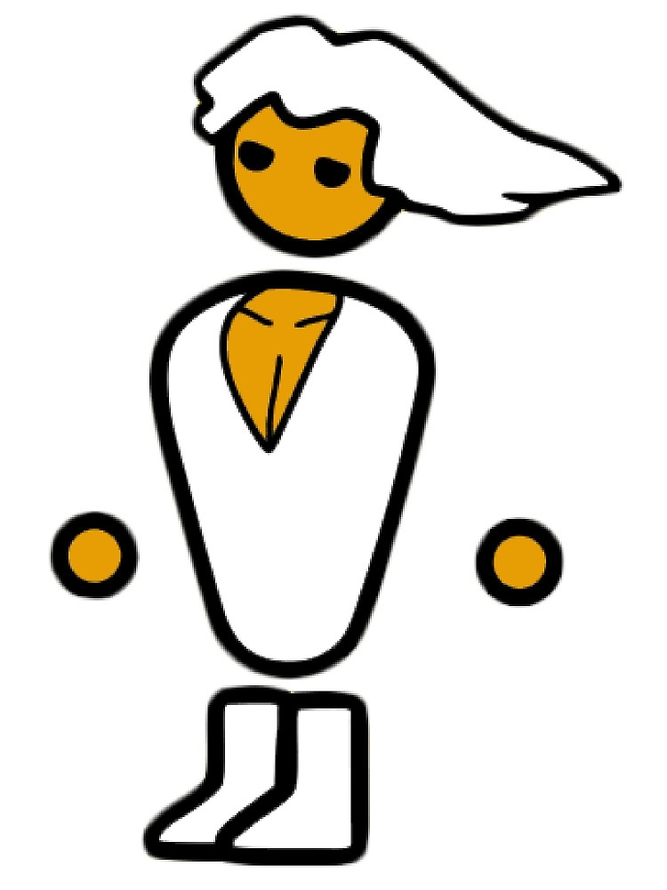

You can find all the things that I can do here, have fun browsing around!
I've used HTML, CSS & Bootstrap to create this page and style it!!!!
Git was used to initialize a repository and keep track what was done and push it up to my github page.
My name is Tony Fabery. I currently live in Oregon, but have lived in a few different places. I've spent my childhood in South Korea then moved to England for middle school then moved to the states. First year of high school was in Massachusetts and remaining high school years as well as college was spent in Alabama. After college I worked as a data warehouse qa in Georgia, where I found my interest in coding. The new found interest of coding lead me to Oregon where I attend Epicodus to pursue a career as a developer.